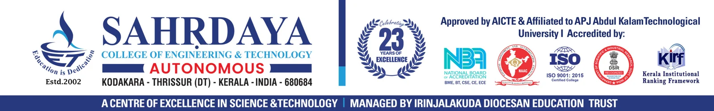
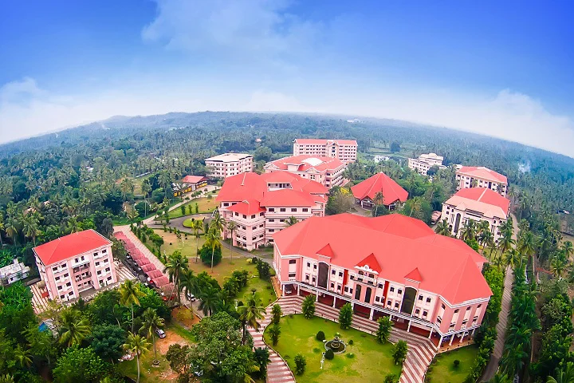
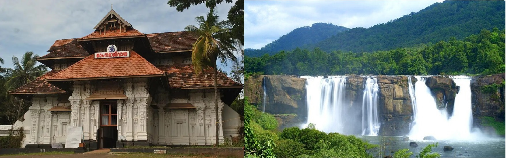

Sahrdaya College of Engineering and Technology (Autonomous)
In association with IEEE Kerala Section
The Second International Conference on AI-Driven Solutions for Sustainable Smart Cities: Challenges and Opportunities (ADSSSC 2027) provides an international platform for academicians, researchers, industry professionals, and students to present and discuss innovative engineering and technology solutions for sustainable smart cities.
The conference highlights how artificial intelligence and multidisciplinary engineering can address urban challenges in mobility, energy, healthcare, public infrastructure, environmental monitoring, and resilience. It brings together experts from computing, electronics, electrical, civil, biomedical, and biotechnology domains, with an emphasis on responsible, practical, and scalable innovation aligned with the United Nations Sustainable Development Goals.
ADSSSC 2027 will feature keynote lectures, technical paper sessions, tutorials, panel discussions, special sessions, and structured networking, fostering collaboration between academia, industry, start-ups, and policymakers.
The first edition, held on 9–10 April 2026, received 893 paper submissions, accepted 301 papers (an acceptance rate of approximately 33.7%), and recorded 147 registered participants. The second edition builds on this foundation with stronger international outreach, track-level review coordination, and industry engagement. View the ADSSSC 2026 archive.
Sahrdaya College of Engineering and Technology (Autonomous), established by the Irinjalakuda Diocesan Educational Trust, is affiliated with APJ Abdul Kalam Technological University and approved by AICTE.
The college offers engineering programmes in Biotechnology, Biomedical Engineering, Civil Engineering, Computer Science and Engineering, Electrical and Electronics Engineering, and Electronics and Communication Engineering, along with postgraduate programmes and doctoral research in relevant disciplines.
Sahrdaya hosts established innovation and research facilities that support interdisciplinary work, an active IEEE Student Branch, and has organised events including the IEEE International Conference ADSSSC 2026, IEEE Infinia, Google AI Campus Fest, and IEEE–Altair events.

Keynote speakers for ADSSSC 2027 will be announced soon. See the distinguished keynote speakers of the first edition.
ADSSSC 2027 invites original contributions on advances in artificial intelligence, data analytics, smart systems, and emerging technologies that support sustainable urban development. Interdisciplinary submissions are encouraged, subject to the applicable IEEE scope and publication requirements.
| Track | Theme | Key Focus Areas |
|---|---|---|
| Track 1 | Artificial Intelligence and Data-Driven Smart Systems | AI for smart-city infrastructure, intelligent transportation, and urban mobility; machine learning and deep learning for real-time analytics and decision support; AI for resource management, energy optimization, and disaster resilience |
| Track 2 | Smart and Renewable Energy Systems | AI-enabled smart grids and energy-efficient power systems; AI and IoT for renewable-energy optimization; intelligent energy storage, forecasting, and management |
| Track 3 | Electronics, IoT, Edge Intelligence, and Automation | IoT, sensors, embedded systems, and urban automation; industrial automation and smart manufacturing; edge computing, cyber-physical systems, and real-time processing |
| Track 4 | Biomedical and Healthcare Innovations | AI in medical imaging, wearable technology, and remote monitoring; IoT-enabled healthcare and connected health systems; healthcare analytics and intelligent decision support |
| Track 5 | Interdisciplinary Engineering for Sustainability | Environmental monitoring and climate-resilient infrastructure; secure data architectures, privacy, and trustworthy AI; sustainable materials, smart buildings, and urban infrastructure |
The International Advisory Board and Technical Program Committee for ADSSSC 2027 will be announced soon.
A look back at IEEE ADSSSC 2026, the first edition of the conference series.
Gram Vista is an inclusive village-scale Cyber-Physical Systems (CPS) Smart Village initiative aligned with Unnat Bharat Abhiyan and driven by the Sahrdaya community vision of education through service.
The initiative serves as a living laboratory for the ADSSSC conference series, enabling real-world validation of AI, IoT, Digital Twins, and CPS technologies across agriculture, water, energy, healthcare, and governance.
Dates are indicative and may be revised; any changes will be announced on this website.
Indicative registration fees for IEEE ADSSSC 2027. Final fees will be announced before registration opens.
| Category | Indicative Fee |
|---|---|
| Student Author — IEEE Member | ₹ 5,000 – 7,000 |
| Student Author — Non-IEEE Member | ₹ 6,000 – 8,000 |
| Faculty / Researcher Author — IEEE Member | ₹ 7,000 – 9,000 |
| Faculty / Researcher Author — Non-IEEE Member | ₹ 8,000 – 11,000 |
| Attendee (without paper) | ₹ 1,000 – 2,500 |
| Foreign Author | US$ 150 – 250 |
Thrissur, known as the “Cultural Capital of Kerala,” is renowned for its vibrant festivals, historic temples, and rich cultural heritage. The city hosts the famous Thrissur Pooram, one of the most spectacular temple festivals in India.
Attractions in and around Thrissur include:
With its welcoming atmosphere and diverse attractions, Thrissur provides an enriching cultural backdrop for conference participants.
